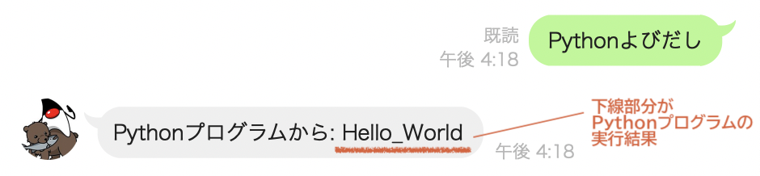
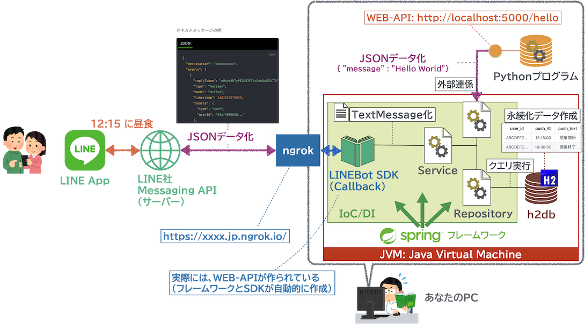
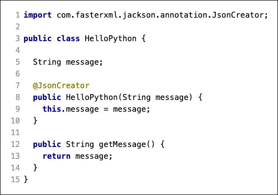
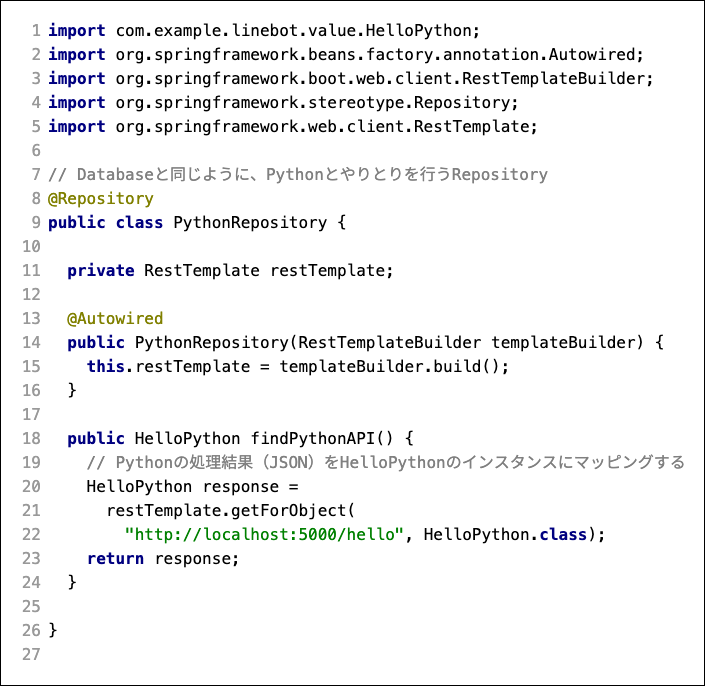
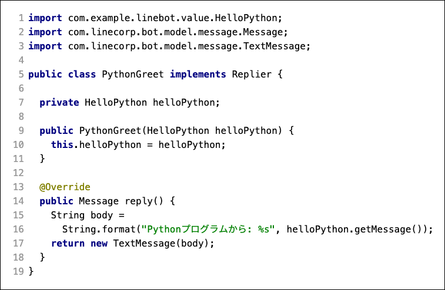
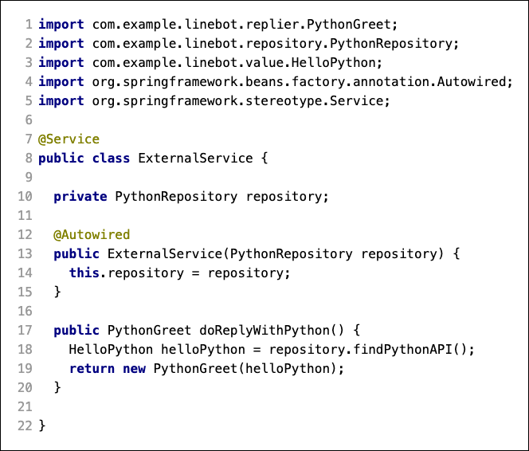
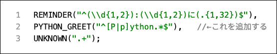
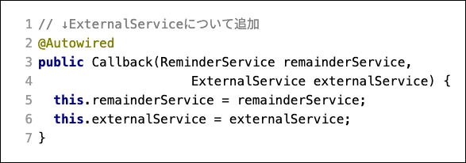
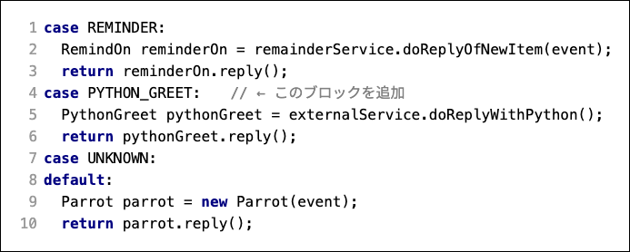
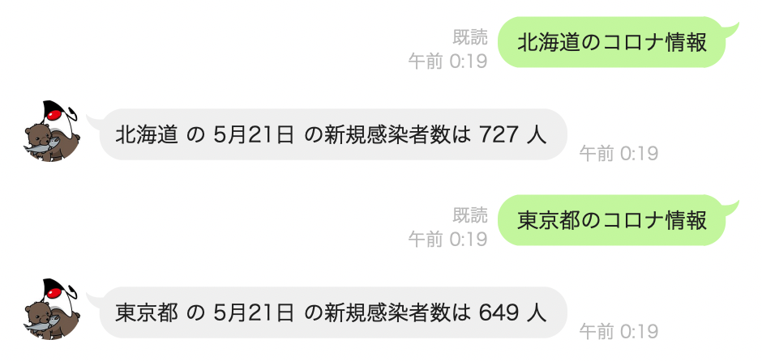

ここでは、LINEBot から、予習で作成した Python プログラムに接続をすることを目的とする。
PythonプログラムはLINEBotとは別の環境（PyCharm）で動いているプログラムなので、 Python側に作られた処理受付窓口 （WEB-API: http://localhost:5000/hello ） を使ってPythonプログラムの実行結果を取得 する。次に、取得した実行結果を使って、 返答メッセージを作成 する。最後に、 LINEBotが応答できるインテントを増やし 、特定のメッセージの時にこの仕組みが動くようにする。
例えば、 Pythonよびだし というメッセージが送られてきたら、

予習で作成したPythonプログラム（ http://localhost:5000/hello ）の実行結果は、ブラウザ（ChromeやSafari）でアクセスすると、次のように表示される。
{ "message" : "Hello_World" }
このように、特にブラウザ等でも利用できるような HTTPベースで、要求されたプログラムの処理結果を返す仕組みを WEB-API と呼ぶ。
専用の通信ではなく、人間がブラウザ等でWebページを閲覧する仕組みの上で、ソフトウェアが違いに処理の要求や処理結果の返答ができるので、情報システム間の連係を行う上でのデファクトスタンダードな手法 として利用されている。
WEB-APIでは、URLの呼び出し（上記であれば、http://localhost:5000/hello ）をメソッドや関数の呼び出しのように捉え、処理結果（上記であれば "message" : "Hello_World"）を他システムで解釈しやすいデータ形式で返答する。特に予習部分では、 JSON形式 で処理結果を返答している。
{ "message" : "Hello_World" }
JSON形式のデータは、: を挟んで左辺の部分（例えば "message" )を Key（データ名）、右辺の部分（例えば "Hello_World" )を Value（値） として、 クラスのフィールドのようなデータ構造 を表す。
例えば上のようなJSONデータは、Javaであれば
class 〇〇 {
String message;
}
のようなクラスのインスタンスに "Hello_World" の文字が入っていると置き換えて考える（マッピングする）こともできる。
また、JSONは配列構造のようなデータを持つこともできる。
{
"itemList": [
{
"date": "2021-05-21",
"name_jp": "北海道",
"npatients": "33318"
},
{
"date": "2021-05-20",
"name_jp": "北海道",
"npatients": "32591"
}
]
}
例えば上のようなデータは、
class 〇〇 {
String date;
String nameJP;
String npatients;
}
class 〇□ {
List<〇〇> itemList; // 配列でもよい
}
のような、2つのクラスのインスタンスに置き換えて考える（マッピングする）ことができる。
JSON形式のデータは、いろいろな言語で↑のようなインスタンス（オブジェクト）に復元したり、インスタンス（オブジェクト）からJSON形式のデータを作り出すこともできる。
したがって、情報システムやソフトウェアの間で、お互いのプログラム言語が違うような場合でも手軽にデータをやりとり することができるメリットがある。
例えば、みなさんがすでに作っているLINEBotも、LINEアプリ側と皆さんのバックエンドプログラムを繋ぐ部分にWEB-APIとJSONデータが使われている。
WEB-APIはSpringとLINEBotのフレームワークが自動的に作成しているので、皆さんとしては用意した実感がないだろうが、実際には callback クラスがWEB-APIとしてLINEアプリ側とのデータのやりとりをJSON形式で行い、LINEアプリからの情報を MessageEvent にデシリアライズしている。
今回の課題では、すでにPythonプログラム側で、WEB-APIが用意されている。LINEBotがこのWEB-APIを通じて、Pythonプログラムに処理を要求し、処理結果をJSONデータで取得することで、外部にあるPythonプログラムとのシステム連携ができるようにする。

予習段階の Pythonプログラムは WEB-API として処理を受け入れ、処理結果を JSON 形式で返答する。
つまり、LINEBot側から、PythonプログラムのWEB-APIを実行し、受け取った結果をインスタンスにデシリアライズすることができれば、Pythonの処理結果をLINEBotのJavaプログラムでも扱えるようになる。
{ "message" : "Hello_World" } の返答結果をマッピング可能なクラスを作ることで、返答結果をデシリアライズできるようにする。
com.example.linebot.value パッケージに、 HelloPython クラスを作成する。

@JsonCreator は、Springフレームワークの能力（Jackson）で、JSONデータをデシリアライズする時に使うコンストラクタであることを示す。
コンストラクタ変数 String message があることで、JSONの message キーとマッピング可能になっている。
また、デシリアライズされた情報は、インスタンスの getMessage メソッドを使えば、他のJavaのプログラムから利用できる。
Pythonプログラム上の WEB-API を呼び出すクラスを作成する。データベースと同様に、外部のシステムを利用するものなので、Springフレームワークでは Repository の役割を設定する。
com.example.linebot.repository パッケージに、 PythonRepository クラスを作成する。

ここで、 RestTemplate は、Javaプログラムにとってのブラウザ（ChromeやSafari）と思えば良い。人間がブラウザで http://localhost:5000/hello にアクセスし、その結果 { "message" : "Hello_World" } を目でみるように、Javaプログラムは RestTemplate で http://localhost:5000/hello にアクセスし、その結果 { "message" : "Hello_World" } を HelloPython クラスのインスタンスにマッピングする。
ここまで作成できたら、git（Windowsの方はgit bash, macOSの方はターミナルなど）を使い、Classroom に push する。
git commit -m "課題6-3まで完了"
git push
Pythonプログラムの処理結果（JSON）をデシリアライズすることができれば、あとはLINEBotの世界でユーザーにどう返答するかを考えるだけになる。
つまり、この先の課題では、序盤からの課題でも書いているコードと同様になる。ここでは全体の復習と捉えて、 どのクラスがどのような責務を担当しているか 、どのインスタンスがどのインスタンスと連係しているか（モジュール的に） を意識してプログラミングしてほしい。
デシリアライズした HelloPython のインスタンスを使って、返答メッセージを作る Replier を作成する。
com.example.linebot.replier パッケージに、 Replier の実装となる PythonGreet クラスを作る。

Repository から HelloPython インスタンスを取得し、 PythonGreet と組み合わせる Service を作成する。
com.example.linebot.service パッケージに、 ExternalService クラスを作る。

git commit -m "課題6-4まで完了"
git push
LINEBotに話しかけた内容の判断は、インテント（意図）で切り替えていた。
Pythonプログラムへの応答を行うためのインテントを定義する。
com.example.linebot.replier パッケージの Intent クラスの内容を追加する。
すでにある REMINDER と UNKNOWN の定義の間 に、インテントとなる正規表現を一つ挟み込む。

^[P|p]ython.*$ は、文頭が Python（もしくは python ）ではじまる文章であることを表す。
つまり Pythonよびだし pythonをよびだす のような、 Python◯◯ という文章が送られた時を意図として利用できる。
追加したインテントで、今回作成した ExternalService （ひいては、Pythonプログラムとの連係）を呼び出すようにする。
Callbackクラスのコンストラクタで、 ExternalService をSpringがインスタンス化できるようにする。

handleMessage メソッドの switch 文を修正する。

PyCharmで、予習で作成したPythonプログラムを起動する。
次に、IntelliJ IDEA, ngrok でLINEBotを起動する。
起動したLINEBotに画像のようなメッセージを送信し、Pythonプログラムの返答を含んだメッセージが帰ってくることを確認する。
動作をTA/SAにもチェックしてもらい、課題の完了の確認を得ること。
git commit -m "課題6をすべて完了"
git push
今回は、自分が作成したPythonプログラムとLINEBotを連係させた。
つまり、 Pythonが得意とする機械学習などをPythonプログラム側で実装 し、データ構造化やフレームワークによるプログラムを行えるJavaプログラム側でLINEBotの挙動やデータベース等を制御 することで、人工知能技術を活用するLINEBotのような、モダンな情報システムを作成することができる。 (ここが、次週以降の内容になる）
また、連係できるのは自らのプログラムだけではない。例えば、行政が公開しているコロナウィルスの情報などをWEB-APIを通じて取得できれば、今日のコロナウィルス感染者数を答える機能を追加するなど、オープンデータを活用したシステムにも発展させることができる。(最近話題になった、筑波大学のシラバス閲覧システムの代替版を学生が作った、というニュースもこのパターン)
実際に山川が試しに作ってみたオープンデータの利用コード例を置いておくので、興味がある学生はチャレンジしてみるとよい。

コロナウィルスの新規感染者数を、政府の新型コロナウィルス情報サイト の都道府県別・感染者総数のWEB-APIから取得して、LINEBotに表示するコード例: こちら